We want to look at an extended example where we realistically want to find a definite integral, but need to use numerical methods rather than solving for the antiderivative and using the fundamental theorem of calculus. Most students are familiar with the concept of a course that is graded on a curve. Formally, that means that there is a preset distribution of grades available in the class, with a certain percentage of the students getting an A, a certain percentage getting a B, and so forth. Most college students are also familiar with the ACT, SAT, or other standardized tests, where the score typically follow a normal or "bell" curve. The result we pull from more advanced mathematics is that many phenomena such as height, weight, and hat size, also follow a bell curve. In a business setting, we are often concerned whether or not a portion of a market will be big enough to support a specialty store. We also want to know how much of my production should be allocated to a range of sizes of a product. This question often boils down to finding the area under a specified portion of the normal curve.
Subsection7.6.1Background from probability
We want to pull some definitions and results from the theory of probability. In particular we want a description of the function we are finding the area under and also of the related area function.
Definition7.6.1.
A Probability Density Function is a function that spreads the area 1 over the entire real line, with the obvious understanding that no value can have a negative probability.
In calculus terms, a Probability Density Function is a function \(f(x)\) defined for \(-\infty\lt x \lt \infty \) such that \(f(x)\ge 0\) and \(\int_{-\infty}^{\infty}f(x)\,dx=1\text{.}\)
A probability density function is also called a continuous distribution function. The probability density function that is of most interest to us is the normal distribution. The normal density function is given by
where \(\sigma\) (sigma), and \(\mu\) (mu), are respectively the standard deviation and mean of the distribution. For this course the mean is the center of the distribution and the standard deviation is a measure of how tightly packed the distribution is. If we set the mean to 0 and the standard deviation to 1 we have the standardized normal distribution, or the familiar bell curve.
Thus, when I note that the adult men in the United States have a height distribution that is normal with a mean of 70 inches and a standard deviation of 3 inches, the distribution is
Thus finding the percentage of men less than 5 feet tall, reduces to evaluating the appropriate integral. Since finding the percentage of the population that fits in our market reduces to finding the area under a specified portion of this curve, we are also interested in the anti-derivative of the distribution.
Definition7.6.2.
Given a probability density function, \(f(x)\text{,}\) the related Cumulative Distribution Function, \(\CDFf(x)\text{,}\) is a function that measures how much area is over the interval \((-\infty,x]\text{.}\)
In calculus terms, \(\CDFf(x)\text{,}\) the Cumulative Distribution Function of \(f(x)\text{,}\) is \(\int_{-\infty}^x f(t)dt\text{.}\)
You will notice the techniques we have for anti-differentiation will not work with the normal distribution. In fact, the normal distribution has no closed form anti-derivative using the functions we are familiar with. Thus we need to use numeric methods.
Subsection7.6.2Examples
Example7.6.3.Tall men in an area.
Figure7.6.4.Video presentation of this example
In the United States, the height of men follows a normal distribution with a mean of 70 inches (5’ 10") and a standard deviation of 3 inches. I want to set up a specialty shop for men who are at least 6’ tall, but no more than 7’ tall. In an area with 100,000 adult men, how big is my potential market?
Solution.
Set up.
My distribution function is \(\frac{1}{3\sqrt{2\pi}}\exp\left(\frac{-(x-70)^2}{2*3^3}\right)\text{.}\) Since I have a population of 100,000 and am interested in the men who are between 72 and 84 inches tall, my potential market is
As an alternative, I can convert the problem so it is expressed in terms of standard deviations. Then I use the standardized normal distribution and my limits of integration are
I want to set up a spreadsheet to find the area under the curve. Since I think I may do this for several problems, I want to set up the worksheet as a template that I can simply fill in. It will make my life easier if I recast the problem in terms of standard deviations. My potential market is \(100000\int_{2/3}^{14/3} \frac{1}{\sqrt{2\pi}} \exp(-x^2/2)dx\text{.}\) I am ready to set up a Riemann sum worksheet as we did in Section 7.1.
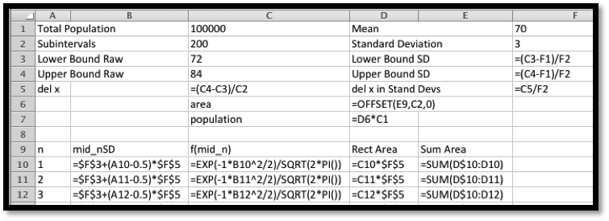
In cells F3 through F5 we convert the lower bound, upper bound, and del x to standard deviations. We recall that we get better accuracy by evaluating the rectangles with a midpoint. The midpoint of the nth rectangle is (n-0.5)*del x above the lower bound. As we did in previous sections, we use the offset command to bring our answer into the top region. When we look at the numbers we see that the potential market is 25,249.
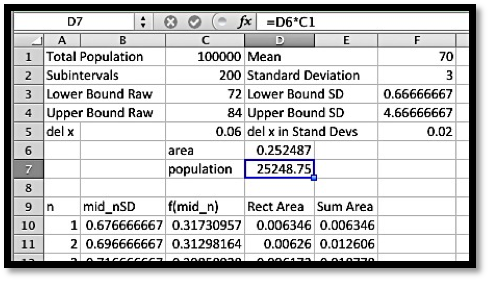
Using Excel Statistics Commands.
By this point in the course you should expect that if we claim a computation is important and done by business many times, that there is an Excel command to do the computation.
The function we are interested in is
NORM.DIST(x, mean, standard deviation, cumulative).
.
Where \(x\text{,}\) mean, and standard deviation have the obvious meanings. The cumulative parameter is either true or false. If it is true we get the cumulative distribution function. If it is false we get the probability density function. If we are working with the standardized normal distribution, where the mean is 0 and the standard deviation is 1, the command is
NORM.S.DIST(x, cumulative).
(If you are using older versions of Excel, the syntax of the command is a little different. Check the appropriate help page if you are using an older version of Excel.) With these commands, our spreadsheet is noticeably simpler.
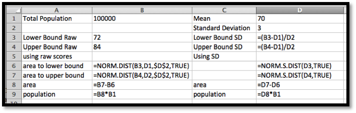
When we look at the values, we get a target population of 25,249. This agrees with our estimate to 5 significant figures.
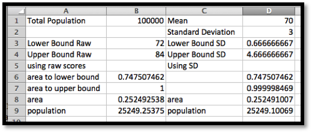
Using Wolfram alpha.
Once I have reduced the problem to evaluating a definite integral, I can find a numeric solution with a CAS package like Wolfram|Alpha.
100000*integrate(exp(-(x-70)^2/(2*3^2))/(3*sqrt(2*pi))) from 72 to 84.
We get our familiar answer of 25,249.
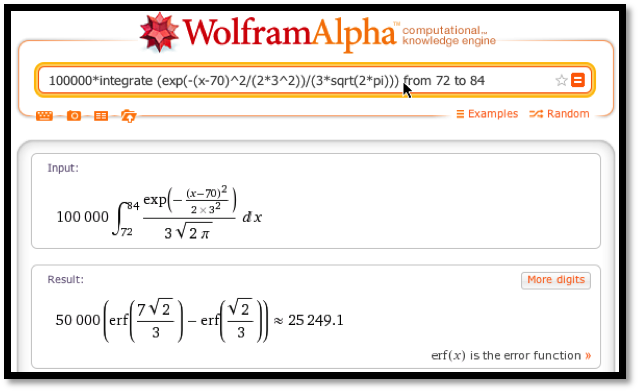
When we compute a target population, we sometimes want to include the tail of the distribution. We might, for example be concerned with all women who are 5 feet tall or less. This sets up an integral over an infinite interval, which we can’t do as a Riemann sum. The first workaround notes that the tails are very small. If all humans who have ever lived are normally distributed, less than 1 is more than 7 standard deviations from the mean. Taking the integral down to \(-7\) will practically be the same as integrating down to \(-\infty\text{.}\) The second workaround uses the symmetry of the normal distribution.
In the United States, the height of women follows a normal distribution with a mean of 64 inches (5’ 4") and a standard deviation of 2.75 inches. I want to set up a specialty shop for women who are no more than 5’ tall. In an area with 500,000 adult women, how big is my potential market?
Solution.
Set up.
Using the reasoning as above, I want to estimate my market if it is 50% of the population plus the percentage between 0 and (\(-4/2.75\)) standard deviations below the mean.
Using Excel and Riemann Sums.
One advantage of having set up the first exercise well, is the Riemann sum problem is now a matter of changing the parameters and subtracting from 0.5 before multiplying by the market size.
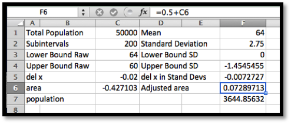
We notice that since we are finding the area under the standardized normal distribution from 0 to a negative number, we get a negative area. Our potential market is composed of 3,645 women.
Using Excel Statistics Commands.
When using the statistics commands, the area function is zero at \(-\infty\text{.}\) Thus we simply have to evaluate NORM.S.DIST(right hand limit, cumulative).
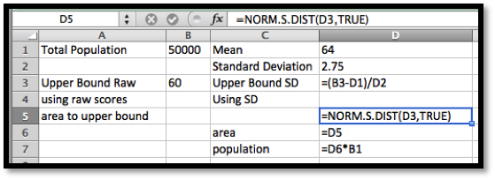
Once again, we get a potential market of 3,645 women.
While the normal distribution spreads a population over the real numbers, most objects come in discrete sizes. Depending on the kind of shoes, the sizes are either whole or half numbers. You can’t buy a shoe of size 8.764. The normal procedure is to divide the population at the middle between the sizes.
Example7.6.7.Women’s shoes.
Figure7.6.8.Video presentation of this example
In the United States, the shoe sizes of women follows a normal distribution with a mean of 8 and a standard deviation of 1.5. I want to order 1000 pairs of shoes. If the shoes are only available in full sizes, how many pairs should I order of size 7?
Solution.
I want the portion of the population between size 6.5 and 7.5. I fit it into my worksheet for Riemann sums.
Of the 1000 pairs of shoes, 211 should be size 7.
We have looked at three methods for finding a portion of a normally distributed population, which we describe as Excel with Riemann sums, Excel with statistics commands, and CAS. It is worthwhile to consider the advantages and disadvantages of the methods. The Riemann sums method takes the most work to set up. It is also conceptually the most straightforward and the most flexible. It is the easiest to adapt if we are doing some nonstandard distribution of a population. It also shows intermediate values if we have a less sharp question and are trying to see what is going on and are still deciding on the business question we want to ask. The Excel with statistics command approach requires us to learn special commands. It is also less work. It would probably be the favored method if we were doing a lot of these computations. It should be noted that Excel has corresponding commands for the other standard probability distributions. The CAS method does not require special commands, but it takes us out of our Excel environment. It does not let us leave a worksheet that is well documented and that can be easily modified by someone else asking similar questions.
Reading Questions7.6.3Reading Check
1.Reading check, The Normal Distribution: An Extended Numeric Example.
This question checks your reading comprehension of the material is section 7.6, The Normal Distribution: An Extended Numeric Example, of Business Calculus with Excel. Based on your reading, select all statements that are correct. There may be more than one correct answer. The statements may appear in what seems to be a random order.
One method in the sections was described as Statistical Averaging.
One method in the sections was described as Integration by parts.
The section uses Symbolab as a computer algebra system that will do integration.
One method in the sections was described as Excel with Riemann sums.
Each method described has advantages and disadvantages. \(C\text{.}\)
One method in the sections was described as CAS.
One method in the sections was described as Excel with formulas.
The method of using CAS is always the best method.
The method of using Excel with Riemann sums is always the best method.
None of the above
Exercises7.6.4Exercises: Normal Distribution Problems
1.
Assume that women’s shoe sizes are normally distributed with a mean of 8 and a standard deviation of 1.5. A particular style of shoes in available in full and half sizes. I plan to make 10,000 pairs of this style.
Express, as an integral, the number of pairs I should make of size 9.
How many pairs of size 9 shoes should I make?
How do your answers change if the shoes are only to be made in full sizes?
If we only have full sizes the limits of integration go from 8.5 to 9.5. I then need 2108 pairs of size 9.
2.
Men’s shoes in Europe are made if full sizes with a different measuring system than we use in the United States. They are normally distributed with a mean of 43 and a standard deviation of 2/3. I plan to buy 1,000 pairs of shoes for my store.
Express, as an integral, the number of pairs I should order of size 45.
Express, as an Excel command, the number of pairs I should order of size 45.
How many pairs should I order of size 44? (Give a number, not an equation.)
3.
Assume that women’s dress sizes are normally distributed with a mean of 14 and a standard deviation of 3. For a particular style, 5000 dresses will be made, and they are available in even integer sizes. (2, 4,…).
Express, as an integral, the number of dresses I should make of size 10.
Assume that men’s suit coat sizes are normally distributed with a mean of 44 and a standard deviation of 4. For a particular style, 2000 suit coats will be made, and they are available in even integer sizes. (2, 4 …).
Express, as an integral, the number of suit coats I should make of size 44.
How many size 44 suit coats should I make?
5.
A study of the size of male soldiers found the headband lengths were normally distributed with a mean of 22.1 inches and a standard deviation of 0.85 inches. Standard sized caps will fit headbands lengths of 20-25 inches.
Express, as an integral, the percentage of soldiers for who will fit the standard sized caps.
Cap sizes come in quarter sizes with a full size corresponding to a change in headband size of 3 inches, with a size 8 corresponding to 25 inches. Out of 1,000 soldiers, how many need a size 8 cap?
A study of the size of male soldiers found the hip breadths were normally distributed with a mean of 13.45 inches and a standard deviation of 0.64 inches. Seats on one airline measure 17 inches between the armrests. Express, as an integral, the percentage of soldiers who hips are too wide for the seats.
7.
Assume that women’s shoe sizes are normally distributed with a mean of 8 and a standard deviation of 1.5. A particular style of shoes is available in full and half sizes. I plan to make 1,000 pairs of this style. Using the Excel statistics commands, make a chart telling me many pairs I should make of each size.
Solution.
Since the shoes come in half sizes, we want the area under the normal distribution function from 0.25 before the given size to 0.25 after the given size.
The desired syntax is
Population size * (NORM.DIST(Size+0.25, Mean, Standard Deviation, TRUE) - NORM.DIST(Size+0.25, Mean, Standard Deviation, TRUE) )
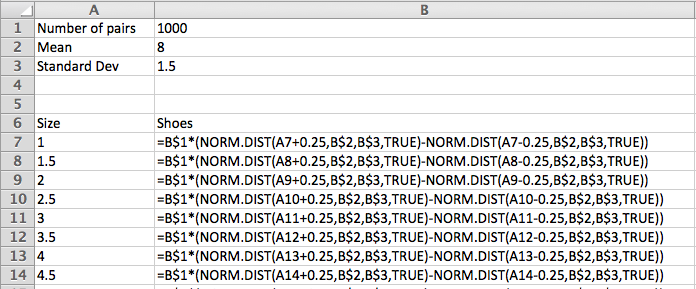
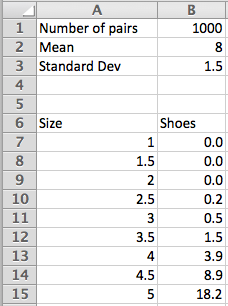
8.
Assume that men’s suit coat sizes are normally distributed with a mean of 44 and a standard deviation of 4. For a particular style, 2,000 suit coats will be made, and they are available in even integer sizes. (2, 4, …). Using the Excel statistics commands, make a chart telling me many suits I should make of each size.
9.
Assume that results on an intelligence test are normally distributed with a mean of 100 and a standard deviation of 15. Using the Excel statistics commands, make a chart distributing 1,000,000 people between intervals of size 10 (90-100, 100-110, etc.). What is the highest IQ score I should expect to find in my population of 1 million?
Solution.
We set the ranges with a high value and a low value.
The desired syntax is
Population size * (NORM.DIST(High value, Mean, Standard Deviation, TRUE) - NORM.DIST(Low value, Mean, Standard Deviation, TRUE) )
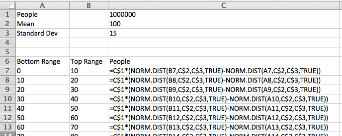
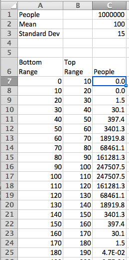
With a million people, the high IQ should be between 170 and 180.
10.
I have been informed that the distance from the back of a chair to the front of the knee of a man sitting is normally distributed with a mean of 24 inches and a standard deviation of 1.3 inches. I want to design airline chairs to fit 99% of the male passengers with 1 inch between the knee and the back of the next chair. How much distance do I need between the front of one chair seat and the back of the next?
11.
I have been informed that the breadth at the shoulders of an adult male is normally distributed with a mean of 17.9 inches and a standard deviation of 1 inch. The standard coach seat on a plane is 17.2 inches wide. What percentage of adult males fit in such a seat without overflow?
The techniques used in this section can easily be adapted to other distributions. For example, the mean time to failure of a brand of hard drives, measured in units of 10,000 hours, has been found to follow a Weibull distribution with shape variable 3 and scale variable 5. The probability density function of failure is
Our warranty is for 10,000 hours of use. (This is approximately 1 year.) What percentage of drives get replaced under warrantee?
We offer an extended warrantee that replaces the hard drive if it fails in under 30,000 hours of use. What percentage of users who buy the extended warranty will have their hard drive fail in the period of time between the expiration of the original warrantee and the end of the extended warranty?
Some credit cards double the manufacturer’s warranty. What percentage of the people who use this plan will have their hard drive replaced by the credit card company?
What percentage of customers see their hard drives last for 100,000 hours of use?
13.
Project — Pick a product and find evidence on the kind of function that describes its failure rate. Based on that data, determine how long we expect it to take until 10% , 50% , and 90% of the products fail.